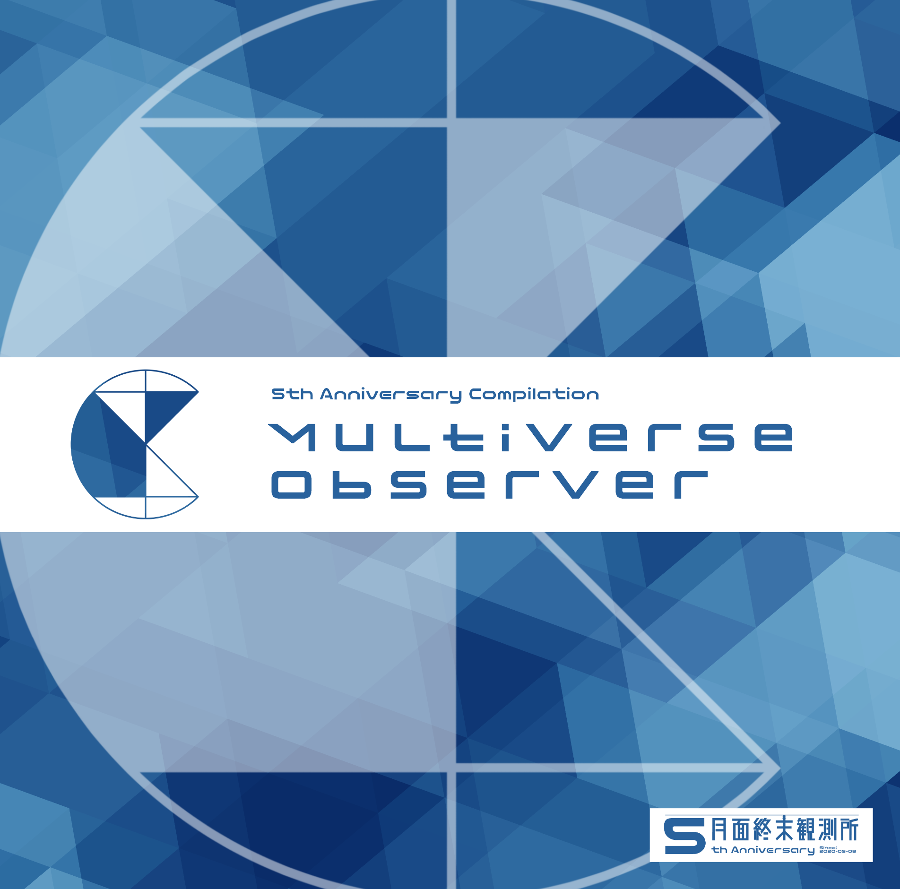

porise
about
equipments
works
links
works
夜はここから feat. 錯音ジバ

Release Date: 2025.04.20
月面終末観測所5周年記念コンピレーションアルバム"Multiverse Observer"収録曲
2025春M3にて頒布 (サークルスペース: い03b "月面終末観測所")
links
Multiverse Observer / 月面終末観測所
月面終末観測所 - FullMoon